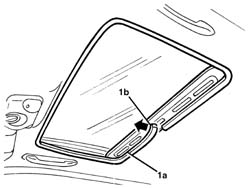

7030B34 Sun roof housing DECORATIVE TRIM - R.R.
- Path
- Procedures > 70 FITTINGS > 7030 SUN ROOF AND HOOD > 7030B SLIDING ROOF > 7030B34 Sun roof housing DECORATIVE TRIM - R.R.
- Kind
- repair procedure (removal / refitting; the operation number is the code)
- Applies to
- all engines; all production periods
- Interactive page
- https://sloeber94.github.io/elrnDB-lThss/en/#/80291
Applies to: all engines; all production periods
 Removing
Removing
 Refitting
Refitting- Open the sun blind.
1. Release the seal (1a) starting from the join (1b) at the rear.

Applies to: all engines; all production periods
Refitting
Removing- Check that the seal is not damaged.
- Fit the seal, starting at the join which should be in the centre at the back.
- Check that the sun blind and the sunroof are working properly.